向いている人
- ドリルやインパクトの先端工具を揃えたい人
- 穴あけ後のバリ取りや仕上がりを良くしたい人
- ナット締めやビット交換をもう少し楽にしたい人
最初はドリルチャック、ステップドリル、面取りカッター、下穴錐、ソケット類、ビットホルダーから見ると選びやすいです。
ドリルドライバやインパクトドライバは、本体だけでも便利です。ただ、現場では先端工具やアダプタを組み合わせることで、できる作業がかなり広がります。
穴を開ける、穴を広げる、バリを取る、ナットを締める、ビットを素早く交換する。こうした作業の流れを止めないために、周辺工具を少しずつ揃えるのが実務的です。
よく使う作業に合わせて、穴あけ・仕上げ・締結・持ち替えの中から必要なものを足していく方が失敗しにくいです。

先輩ドリルやインパクトは、本体だけじゃなくて先端工具の組み合わせで作業のしやすさが変わるよ。

新人穴あけ、面取り、ソケット、ビット管理みたいに作業別で見ると分かりやすそうですね。
ステップドリル、面取りカッター、ソケットアダプタなどを使うと、同じドリル・インパクトでも作業の幅が広がります。
ただし、便利そうだからといって一気に全部揃える必要はありません。まずは自分の作業で出番が多いものから見るのがおすすめです。
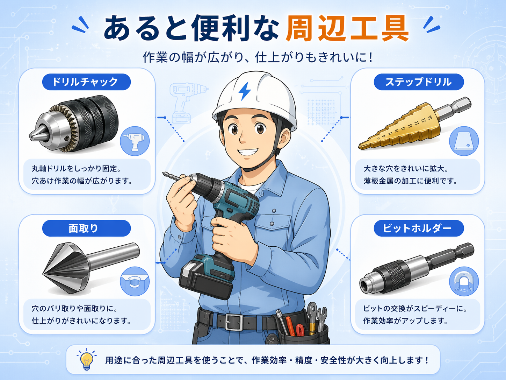
穴あけ作業を広げたい時は、ドリルチャック、ステップドリル、下穴錐が候補になります。
丸軸のキリを使いたい時に便利です。
薄板の穴あけや穴の拡張に使いやすいです。
ビスをきれいに入れたい時の下穴作りに便利です。
六角軸・丸軸、木工用・金属用などを購入前に確認します。
穴あけ後のバリ取りや仕上がりを良くしたい時は、面取りカッターやタップドリルが候補になります。
穴を開けるだけで終わらせず、バリ取りや面取りまでできると、見た目も作業性も整いやすくなります。
インパクトでナットを回したい時は、ソケット類があると便利です。盤まわり、レースウェイ、ラックまわりなど、用途が合うと作業がかなり楽になります。
ビット交換や小物管理は、作業そのものより地味に時間を取られます。ビットホルダー、クイックキャッチャー、マグネット系の補助工具があると、作業テンポを保ちやすくなります。
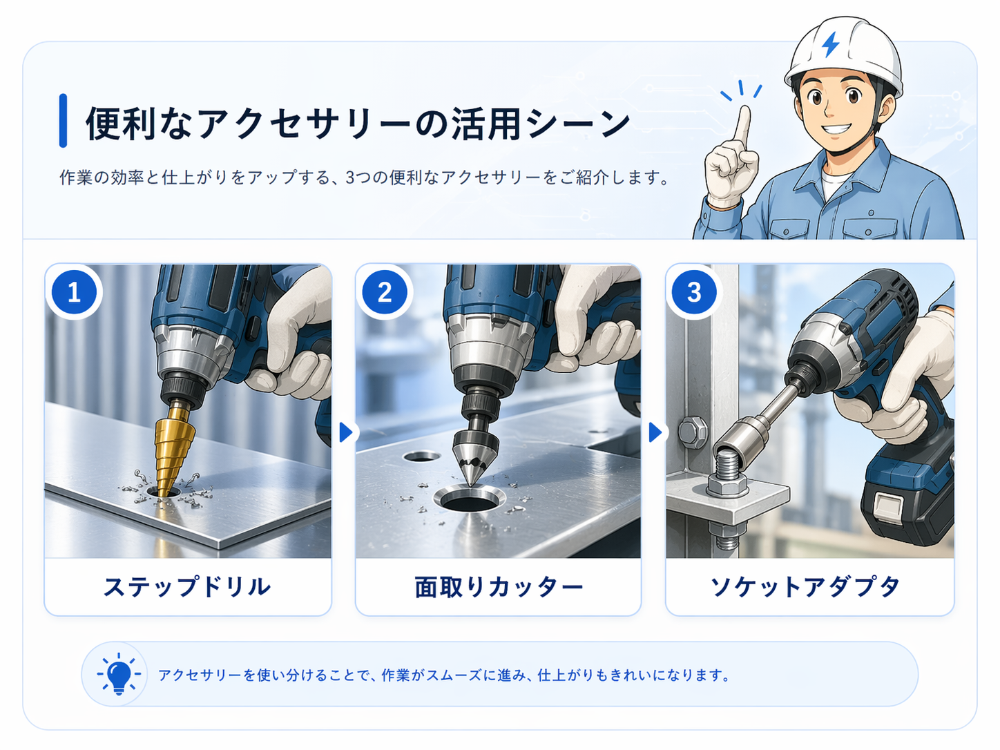
現行記事の商品リンクと画像パスを維持して、用途が一目で分かるコンパクトカードにしています。
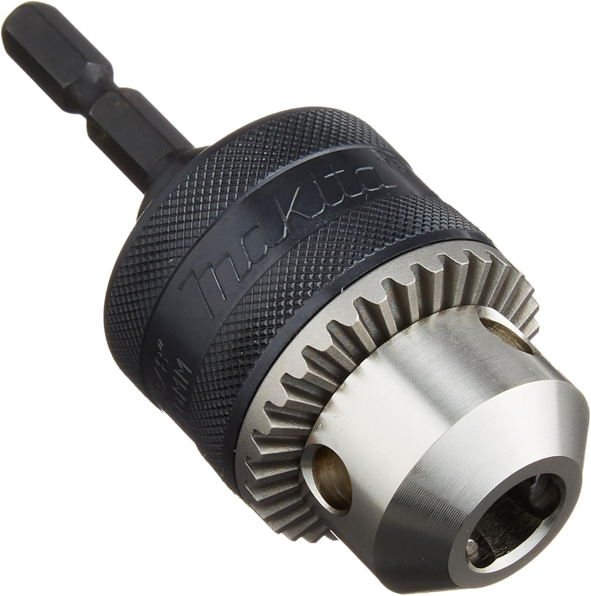
おすすめ 1丸軸のキリを使いたい時に便利です。穴あけ作業の幅を広げたい人に向いています。
Amazonで見る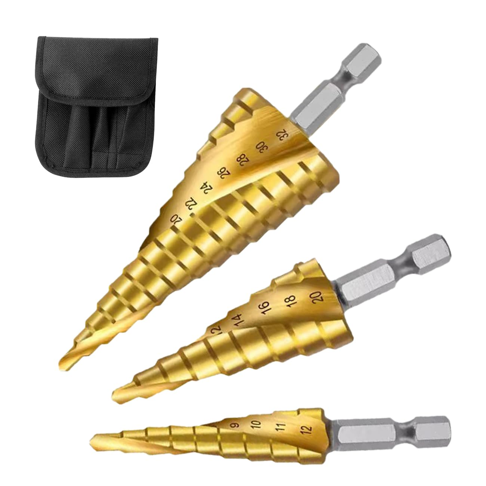
おすすめ 2薄板の穴あけや穴の拡張に使いやすい工具です。盤まわりの加工でも出番があります。
Amazonで見る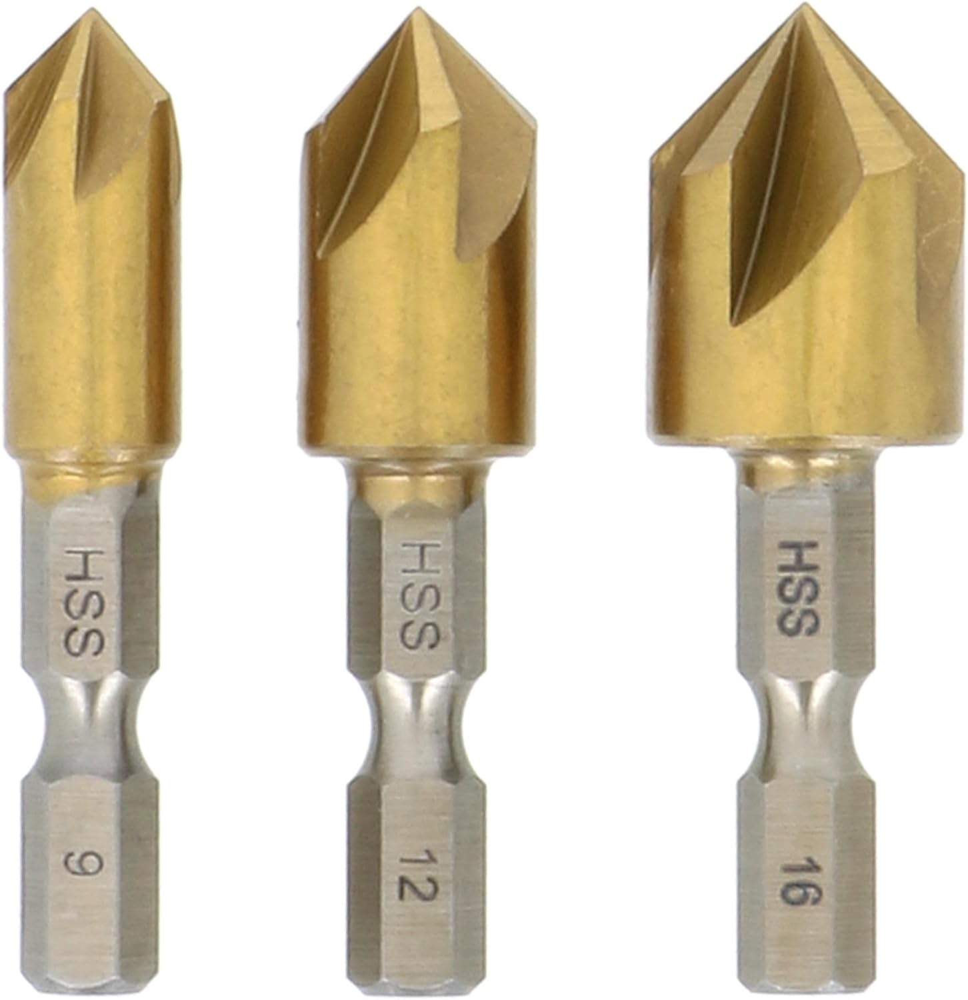
おすすめ 3穴あけ後のバリ取りや仕上げに使います。見た目と安全面を整えたい時に便利です。
Amazonで見る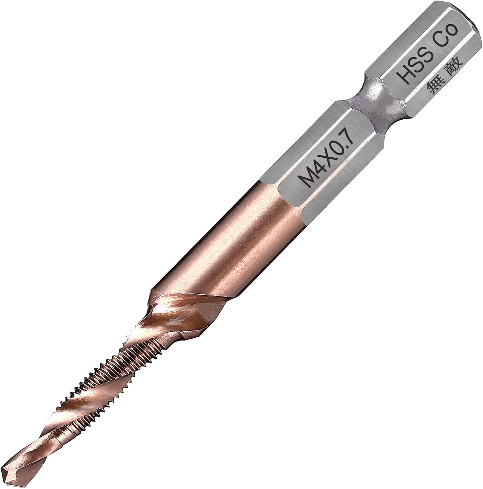
おすすめ 4穴あけ、面取り、ねじ切りをまとめたい時に候補になります。用途を確認して選びます。
Amazonで見る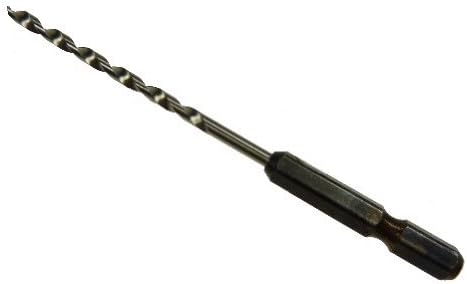
おすすめ 5ビスをきれいに入れたい時の下穴作りに便利です。割れやズレを減らしたい時に使いやすいです。
Amazonで見る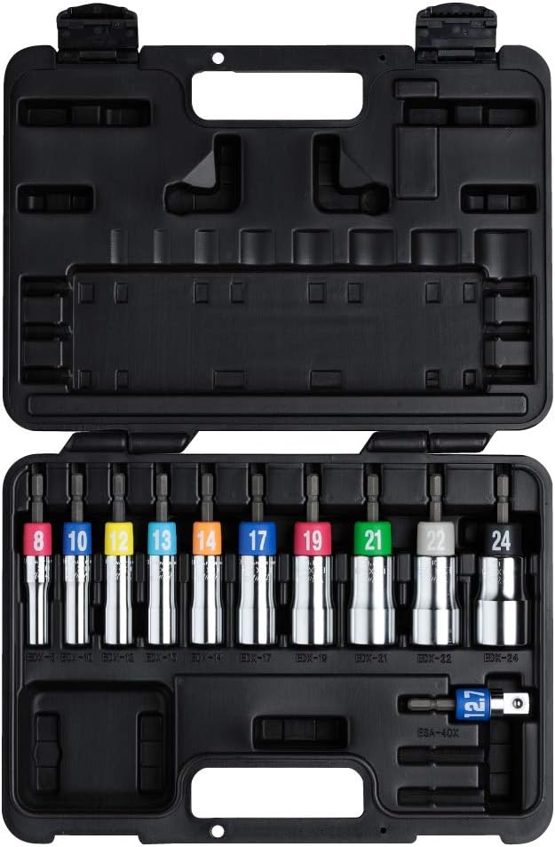
おすすめ 6インパクトでナットを回したい時に使います。サイズをまとめて持ちたい人に向いています。
Amazonで見る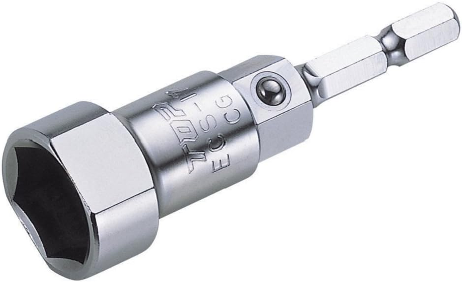
おすすめ 7レースウェイ作業など用途が合う時に便利です。作業内容が合う人は候補に入れやすいです。
Amazonで見る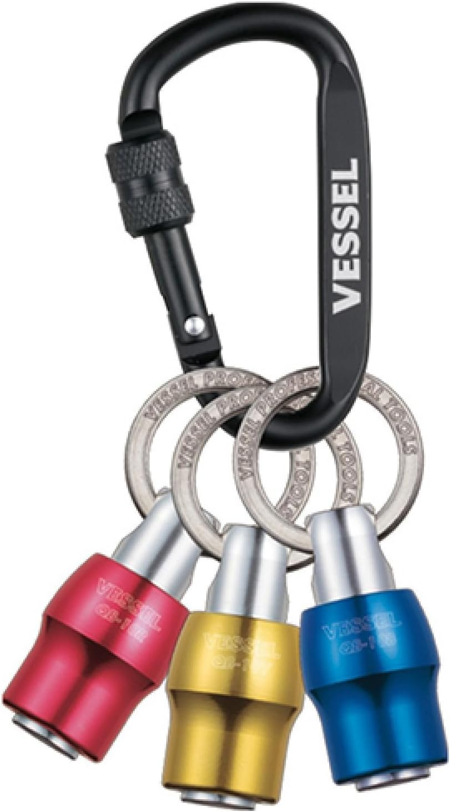
おすすめ 8ビット交換や持ち替えを早くしたい時に便利です。よく使うビットを分けて持ちやすくなります。
Amazonで見る おすすめ 9
おすすめ 9
よく使うビットをまとめて持ち替えしやすくする工具です。ビット管理を楽にしたい時に便利です。
Amazonで見る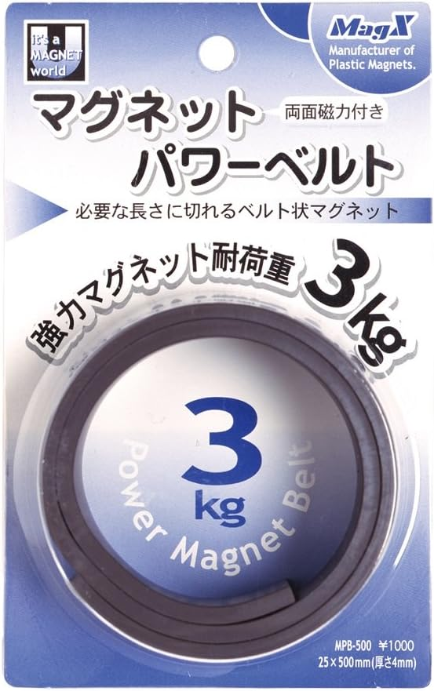
おすすめ 10ビスや小物を一時置きする時に便利です。作業中の小物管理を少し楽にできます。
Amazonで見る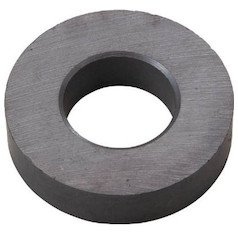
おすすめ 11細かい補助作業で磁石が欲しい場面に使いやすいです。小物保持や一時固定に役立ちます。
Amazonで見る周辺工具は便利ですが、インパクト用・ドリルドライバ用・六角軸・丸軸など、使える条件が違うものがあります。
六角軸なのか丸軸なのかを見て、手持ち工具に合うか確認します。
薄板用、木工用、金属用など、使う材料に合うかを確認します。
対応していない材料やサイズに無理に使うと、工具や材料を傷める原因になります。
セット品も便利ですが、よく使うものは単品で良いものを選ぶのもありです。
本体だけでも作業はできますが、周辺工具があると作業の幅が広がります。
最初は、ドリルチャック、ステップドリル、面取りカッター、ソケット類、ビットホルダーあたりから見ていくと選びやすいです。自分の作業内容に合うものがあれば、無理なく少しずつ足していくのがおすすめです。
※当サイトはAmazonアソシエイト・プログラムに参加しており、適格販売により収入を得ています。